为无理数的证明相同，它原来是包括在欧几里得《原本》的早期版本中的，作为第十篇的命题117。不过欧几里得原书中很可能是没有的，所以现代版本已经把它删去。
为无理数的证明相同，它原来是包括在欧几里得《原本》的早期版本中的，作为第十篇的命题117。不过欧几里得原书中很可能是没有的，所以现代版本已经把它删去。5．毕达哥拉斯派
毕达哥拉斯据信是曾就学于泰勒斯的。他继而拾起学术事业的火炬，在意大利南部的希腊居留地克罗顿（Croton）成立了他自己的学派。毕达哥拉斯派学者没有书面著作，我们是通过他人如柏拉图和希罗多德（Herodotus）的著作知悉他们的。特别是我们对毕达哥拉斯及其门徒的生平不清楚，也不能肯定一些发现该归功于毕达哥拉斯本人还是应归功于他的门人。因此，在谈到毕达哥拉斯的工作时，实际是指这批学者在公元前585年（所传毕达哥拉斯出生之年）到公元前400年左右这一段时间里所做的工作。菲洛劳斯（Philolaus，公元前5世纪）和阿基塔斯（公元前428—前347）是这个学派中的杰出成员。
毕达哥拉斯生于靠近小亚细亚海岸的萨摩斯岛（Samos）。他在米利都泰勒斯那里学了一段时期之后就到别处游历，其中有埃及和巴比伦，并可能在那里学到一些数学和神秘主义的教条。然后他卜居于克罗顿。在那里他成立了一个宗教、科学和哲学性质的帮会。这是个正式的学派组织，会员人数是限定的，并由领导人传授知识，会员对学派中所传授的知识要保密，不过有些史学家否定数学和物理知识保密的说法。据信毕达哥拉斯派的人参与政治活动；他们同贵族党派结盟，因而被民主党派赶走。毕达哥拉斯逃奔到邻近的米太旁登（Metapontum），约公元前497年被害于该处。他的门人散居到希腊其他学术中心，继续传授他的教导。
希腊人对数学看法本身的一个重大贡献是有意识地承认并强调：数学上的东西如数和图形是思维的抽象，同实际事物或实际形象是截然不同的。有些原始文明社会（埃及和巴比伦人肯定如此）诚然也知道把数脱离实物来思考，但他们对这种思考的抽象性质究竟自觉认识到何种程度是颇成问题的。而且在希腊人之前的所有文明中，几何思想肯定是离不开实物的。例如，埃及人的直线就无非是拉紧的绳或田地的一边，而矩形则是田地的边界。
数学研究抽象概念，这种认识肯定要归功于毕达哥拉斯学派。不过在他们开始进行工作时情况可能并不如此。亚里士多德曾说，毕达哥拉斯学派把数看作是真实物质对象的终极组成部分(1)。数不能离开感觉到的对象而独立存在。早期毕达哥拉斯学派说到一切对象由（整）数组成，或者说到数乃宇宙的要素时，他们所要说的意思就是字面上的意思，因他们心目中的数就如同我们心目中的原子一样。也有人相信，公元前6世纪和前5世纪的毕达哥拉斯学派实际上并不把数和几何上的点区分开来。因此他们从几何角度把一个数看作是扩大了的一个点或很小的一个球。但据普罗克洛斯的记载，欧德摩斯说毕达哥拉斯认识到较高（比之于埃及人和巴比伦人）的原理，并且纯凭心智来考虑抽象问题。欧德摩斯还说毕达哥拉斯创立了纯数学，把它变成一门高尚的艺术。
毕达哥拉斯学派常把数描绘成沙滩上的点子或小石子。他们按点子或小石子所能排列而成的形状来把数进行分类。例如，1，3，6和10这些数叫三角形数，因为相应的点子能排列成正三角形（图3.1）。第四个三角形数10特别使毕达哥拉斯学派神往，因为这是他们所珍爱的数，并且这三角形的每边有4点，而4又是另一个得宠的数。他们认识到1，1＋2，1＋2＋3等这些和数都是三角形数，并且知道1＋2＋…＋n＝（n/2）（n＋1）。
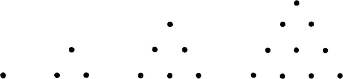
图3.1
1，4，9，16，…这些数他们称之为正方形数，因为用点表示时可把它们排成正方形（图3.2）。复合数（非质数）中凡不恰好是正方形数的，则叫做长方形数。
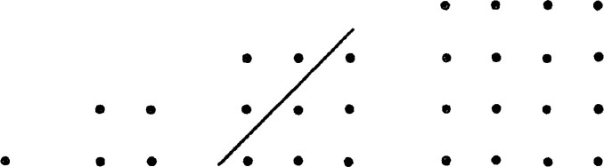
图3.2
把代表数的点子排成几何图形后，整数的一些性质就变得很明显。例如在图3.2的第三个图形中画了一道斜杠之后，便可看出相继两个三角形数之和是个正方形数。这个关系是普遍成立的，因若用现代记法，我们可以看出
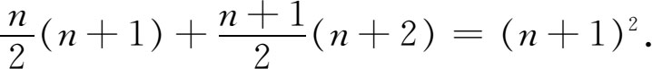
至于说毕达哥拉斯学派能证明这个一般结论，那却是成问题的。
毕达哥拉斯派再用图3.3所示的方案从一个正方形数得出下一个正方形数。图中折线右方和下方的那些点所形成的数，他们称作一个gnomon。他们从这图里所看出的事实，若用记号表示出来就是
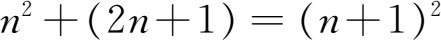
。其次，若从1起加上gnomon 3，再加上gnomon 5等，其结果用我们的记号来表示便是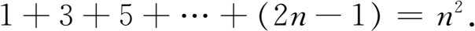
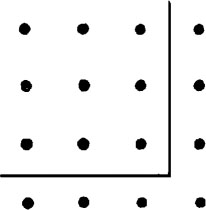
图3.3
“gnomon”这个字在巴比伦人的原意可能是指日规上的直杆，用它的阴影来指示时刻。在毕达哥拉斯时代gnomon指木匠用的方尺，它的形状就像图3.3中的gnomon那样。它还表示从正方形的一角割掉一个小正方形后所余的图形。以后，欧几里得又把gnomon表示从平行四边形一角割掉一个较小的相似平行四边形后所余的图形（图3.4）。
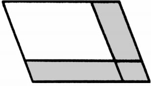
图3.4 有阴影的那块面积称为gnomon
毕达哥拉斯派还研究多角数，如五边形数、六边形数和其他多边形数。图3.5中的每个点代表数1。从这图可看出第一个五边形数是1，次一个（其各点排成一个五角形的顶点）是5，第三个数是1＋4＋7即12等。第n个五边形数，用我们的记号是
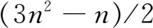
。同样有六边形数（图3.6）1，6，15，28，…而一般是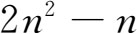
。
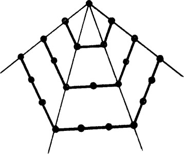 | 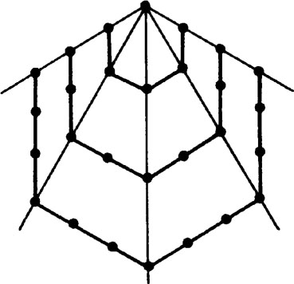 |
| 图3.5 五边形数 | 图3.6 六边形数 |
若一数等于它的所有因数（能除尽该数的数，包括1，但不包括该数本身）之和，他们称之为完全数，如6，28和496便是完全数。数本身大于其因数之和的叫盈数，小于其因数之和的则叫亏数。若有两数彼此等于另一数的因子之和，他们称这两数是亲和数，例如284与220便是亲和数。
毕达哥拉斯派得出了一个法则，能求出可排成直角三角形三边的三元数组。从这一法则说明他们知道毕达哥拉斯定理，关于这定理以后还要细讲。他们发现，若m是奇数，则m，
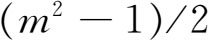
及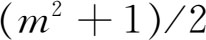
便是这样的三元数组。不过这法则只给出一部分的这种三元数组。如今我们把能形成直角三角形三条边的三个整数所构成的任何集合统统称为毕达哥拉斯三元数组。毕达哥拉斯派研究了质数、递进数列，以及他们认为美的一些比和比例关系。例如，若p和q是两数，它们的算术平均值A是
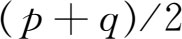
，几何平均值G是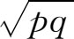
，而调和平均值H，即1/p和1/q的算术平均值取倒数，是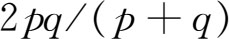
。但我们可看出G是A和H的几何平均值。这个比例便叫完全比例，而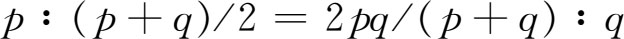
这个比例他们称之为音乐比例。毕达哥拉斯派所说的数仅指整数。和现代人不一样，他们不把两个整数之比看成是一个分数而是另一类数。实际的分数是用于商业上的，以表示钱币或度量单位的若干部分，但算术在商业上的这类应用是属于正统希腊数学范围之外的。因此当毕达哥拉斯派发现有些比——例如等腰直角三角形斜边与一直角边之比或正方形对角线与其一边之比——不能用整数之比表达时，他们就感到惊奇不安。由于毕达哥拉斯派关心能形成直角三角形三边的三元整数组，他们很可能是在做这项工作时发现这些新比的。他们把那些能用整数之比表达的比称作可公度比，意即相比两量可用公共度量单位量尽，而把不能这样表达的比称作不可公度比。例如我们今日写成
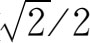
的比便是不可公度比。不可公度量之比希腊人称作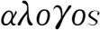
（alogos，意即“不能表达”）。他们也用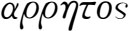
（arratos，没有比）这个词来表达。后人把不可公度比的发现归功于米太旁登的希帕苏斯（Hippasus，公元前5世纪）。相传当时毕达哥拉斯派的人正在海上，就因这一发现而把希帕苏斯投到海里，因为他在宇宙间研究出这样一个东西否定了毕达哥拉斯派的信条：宇宙间的一切现象都能归结为整数或整数之比。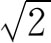
与1不能公度的证明是毕达哥拉斯派给出的。据亚里士多德说，他们用的是归谬法，即间接证法。这个证明指出，若设斜边能与一直角边公度，则同一个数将又是奇数又是偶数。证明过程如下：设等腰直角三角形斜边与一直角边之比为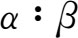
并设这个比已表达成最小整数之比。于是根据毕达哥拉斯定理得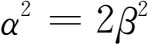
。由于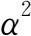
为偶数，α必然也是偶数，因任一奇数的平方必是奇数(2)。但比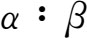
是既约的，因此β必然是奇数。α既是偶数，故可设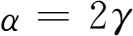
。于是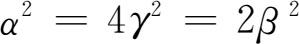
。因此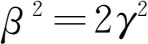
，这样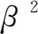
是个偶数。于是β也是偶数。但β同时又是奇数，这就产生了矛盾。这个证明当然和现今对为无理数的证明相同，它原来是包括在欧几里得《原本》的早期版本中的，作为第十篇的命题117。不过欧几里得原书中很可能是没有的，所以现代版本已经把它删去。
现代数学中用无理数来表示不可公度比。但毕达哥拉斯派不愿意接受这样的数。巴比伦人是运用这种数的，用时取它们的近似值，但他们可能不知道他们的60进制近似分数是决不能确切等于这种数的。埃及人也没有认识到无理数有不同的性质。毕达哥拉斯派则至少认识到不可公度比与可公度比的性质完全不同。
这发现提出了希腊数学里的一个中心问题。在这之前毕达哥拉斯派是把数与几何等同起来的。但不可公度比的存在打破了这种等同的看法。他们并不因此不再在几何里考察所有种类的长度、面积和比，但对于数的比则只限于考察可公度比。关于不可公度比以及一切量的比例，它们的理论是欧多克索斯提出的，这人的工作我们不久就要讲到。
有些几何结果也算是归功于毕达哥拉斯派的。最出名的是毕达哥拉斯定理本身，这是欧几里得几何的一个关键定理。人们认为我们所学的关于三角形、平行线、多边形、圆、球和正多面体的一些定理也是毕达哥拉斯派发现的。特别是他们知道三角形三角之和是180°。关于相似形的一套有限的理论，以及平面可为等边三角形、正方形和正六边形所填满这一事实，都属于毕达哥拉斯派的研究结果。
毕达哥拉斯派开头研究的一类问题叫面积应用问题。其中最简单的一个问题是求作一多边形使其面积与一已给多边形相等而形状与另一已给多边形相似。另一个是求作一特定图形，使其面积超过或小于另一图形的面积，其差为一给定的数值。面积应用问题的最重要形式是：在一已知线段的一部分或其延长线上作一平行四边形，使其与一给定直线图形等面积，并使其小于（在第一种情况下）或超过（在第二种情况下）整个线段上的平行四边形的部分，与一已给的平行四边形相似。我们在研究欧几里得著作时将要讨论面积应用问题。
希腊人对数学的最重大贡献是坚持一切数学结果必须根据明白规定的公理用演绎法推出。这就要问毕达哥拉斯派是否证明了他们的几何结果。对此我们不能给出明确的回答，不过在毕达哥拉斯派数学的早期或中期，说已要求根据任何一种公理系统（明确规定的或蕴含的）来作演绎证明，这种说法是非常值得怀疑的。普罗克洛斯确实说过他们证明了三角形内角之和的定理；但这证明可能是晚期毕达哥拉斯派学者作出的。至于他们是否证明了毕达哥拉斯定理这一问题，曾有许多人探讨过，而答案则是他们可能并未证明。如果用相似三角形，这是相当容易证明的，但毕达哥拉斯派并没有完整的相似形理论。欧几里得《原本》第一篇第47命题给出的证明（见第4章第4节）是难的，因它并未应用相似形理论，而普罗克洛斯是把这一证明归功于欧几里得本人的。关于毕达哥拉斯派几何里有没有证明这一问题，最合理的结论是：在该学派存在的大部分时间里，他们是根据一些特例来肯定所得的结果的。不过到了学派晚期即公元前400年左右，由于其他方面的发展，证明在数学中所处的地位改变了；所以学派晚期的成员可能作出了合法的证明。